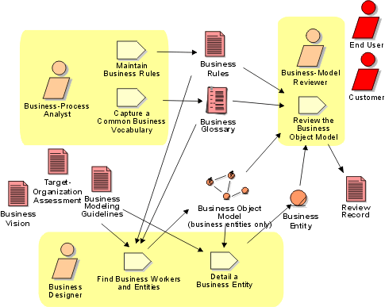

Disciplines >
Disciplines >
 Business Modeling >
Business Modeling >
 Workflow >
Develop a Domain Model
Workflow >
Develop a Domain Model
Disciplines >
Business Modeling >
Workflow >
Develop a Domain Model
Workflow Detail:
|
Topics |
 |
You can choose to develop an "incomplete" business object model, focusing on explaining products, deliverables, or events that are important to the business domain. Such a model does not include the responsibilities people carry, and is often referred to as a domain model.
The purpose of this alternative workflow detail is to:
This workflow detail is often conducted as a series of workshops, attended by the core development team (acting as business designers) and some invited domain experts. There should also be at least one person in attendance who has previously held the responsibility of business-process analyst—both to ensure that the business use-case model is understandable and to keep the glossary up-to-date. If the business designers lack knowledge in some aspect of the business domain, this can be covered by invited stakeholders.
The following sample techniques can be applied in this workflow detail:
The core development team should conduct a few rounds of internal walkthroughs, facilitated by the business designer, to clean up unnecessary inconsistencies before their work is more formally inspected and reviewed by the extended team.
The team divides the material so that they don’t have to review everything at once. The review meeting should not take more than a day.
Activity: Review the Business Object
Model contains checklists that will help you when you are reviewing a
business entity. See also Work Guideline:
Reviews.
|
Rational Unified
Process
|